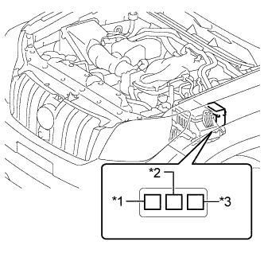

РЕЛЕ (для моделей с подогревателем PTC) > ПРОВЕРКА БЕЗ СНЯТИЯ С АВТОМОБИЛЯ |
| 1. СНИМИТЕ РЕЛЕ ПОДОГРЕВАТЕЛЯ PTC (PTC HTR SUB № 1, PTC HTR SUB № 2 И PTC HTR SUB № 3) |
|  |
Извлеките 3 реле подогревателя PTC из блока реле моторного отсека.
| *1 | Реле PTC HTR SUB № 1 |
| *2 | Реле PTC HTR SUB № 2 |
| *3 | Реле PTC HTR SUB № 3 |
| 2. ПРОВЕРЬТЕ РЕЛЕ ПОДОГРЕВАТЕЛЯ PTC (PTC HTR SUB № 1, PTC HTR SUB № 2 И PTC HTR SUB № 3) |
 |
Измерьте сопротивление в соответствии со значениями, приведенными в таблице ниже.
| Контакты для подключения диагностического прибора | Условие | Заданные условия |
| 3 - 5 | Напряжение аккумуляторной батареи не подается на контакты 1 и 2 | 10 кОм или более |
| Напряжение аккумуляторной батареи подается на контакты 1 и 2 | Менее 1 Ом |
| 3. УСТАНОВИТЕ РЕЛЕ ПОДОГРЕВАТЕЛЯ PTC (PTC HTR SUB № 1, PTC HTR SUB № 2 И PTC HTR SUB № 3) |
Установите 3 реле подогревателя PTC в блок реле моторного отсека.